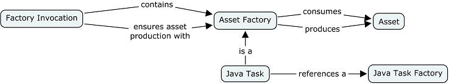

A task is the most basic means for producing assets.
A java task is the most basic technique to produce assets in Java. For instance, generation pattern are produced by a factory component; however, this factory component uses a Java task to process patterns. The interest is to use any kind of tool. A java task can be a simple or sophisticated Java call.
A java task is a type of asset factory contained by an factory component invocation. It references a Java Task Factory class that executes the task.

Figure 1. Java Task Structure